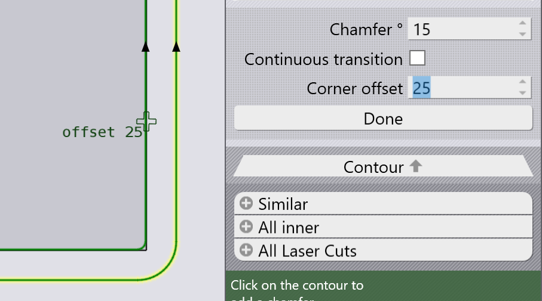
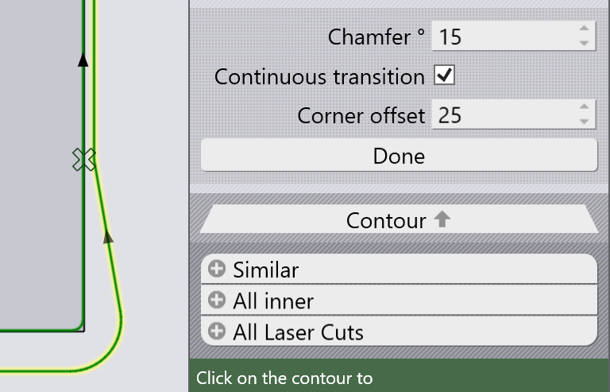

Smusso variabile
L’uso comune delle impostazioni Smusso è quello di applicare uno smusso uniforme su tutto il contorno:
Modifica della smussatura lungo il contorno
È anche possibile modificare l’angolo dello smusso in un punto intermedio del taglio smussato[1]. Nella sezione Ampliato del pannello è presente un pulsante Change Chamfer… utilizzabile a questo scopo.
Inserire un angolo Smusso e fare clic sul contorno: il nuovo angolo verrà utilizzato da quel punto per il resto del contorno:
È possibile continuare a ripetere questa operazione. Se si desidera che solo il bordo superiore abbia un angolo dello smusso di 0, è possibile ripristinare lo smusso di 45 gradi nello spigolo in alto a sinistra come imposteremo nell’immagine sopra. Dopo tale operazione, il risultato sarà il seguente:

Operazioni aggiuntive
-
È possibile inserire un valore nell’impostazione Corner offset per lo scatto a una precisa distanza da uno spigolo per applicare la modifica dell’angolo di smussatura:
 -
Spostare il mouse su un punto di transizione cambia il cursore in una croce; è possibile fare clic a quel punto per rimuovere la transizione di una smussatura:

-
L’interruttore Continous transition può essere utilizzato per creare una transizione più graduale dell’angolo dello smusso (dal precedente spigolo o dal punto di transizione precedente). Ecco lo stesso esempio di cui sopra, ma applicato come transizione continua:
